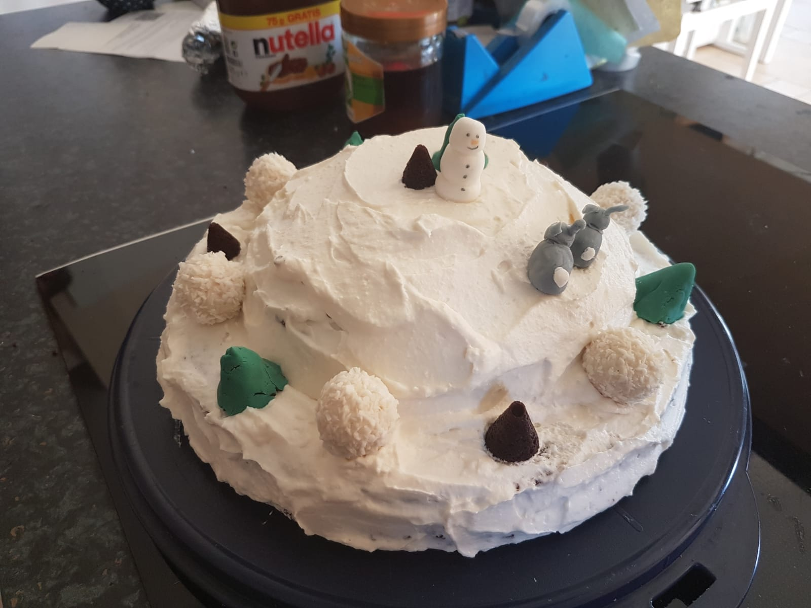
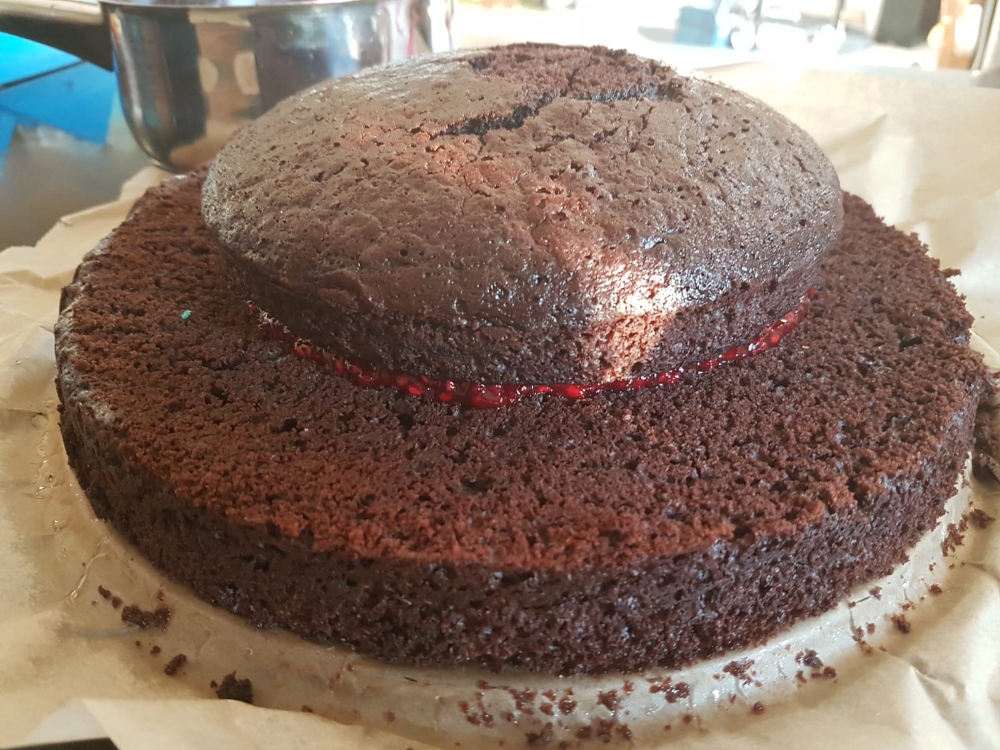
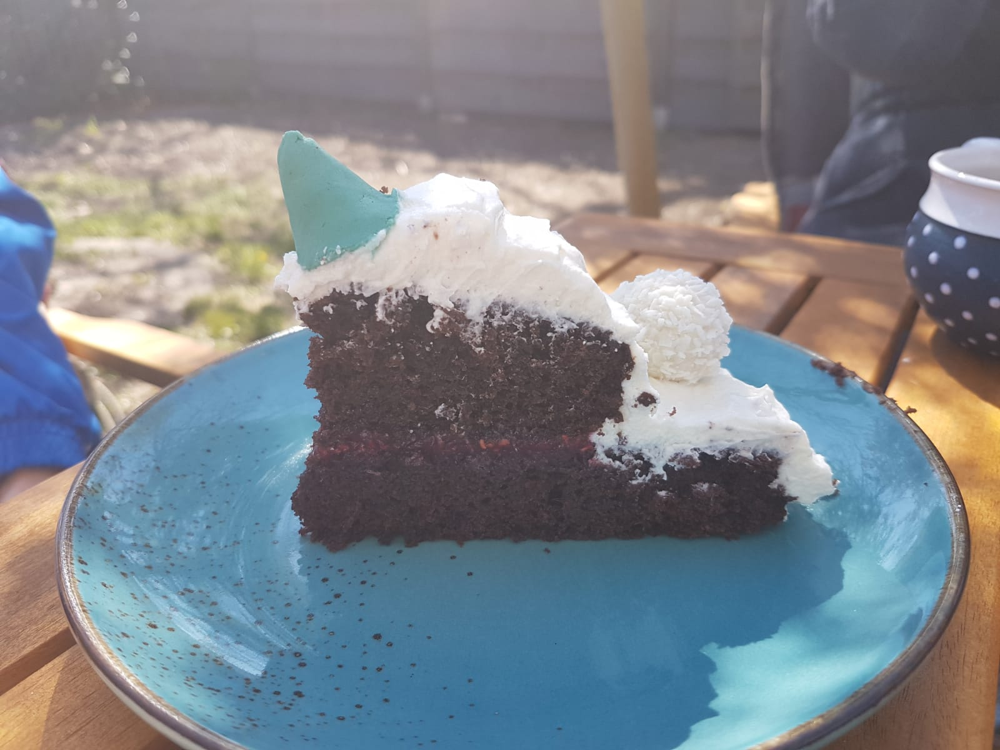

zurück
Schoko-Winterkuchen
Zubereitungszeit: 110min

- Kuchenteig in oben genannte Formen aufteilen, backen (Tannenbäume benötigen nur ca 15-20 min)
- 1h, besser noch über Nacht, auskühlen lassen
- Himbeerkompott zubereiten, auskühlen lassen (ebenfalls am besten über Nacht)
- die Bäume zum Teil mit Fondant umwickeln, Figuren wie den Schneemann modellieren
- Den großen Boden gerade schneiden
- Himbeerkompott zwischen die beiden Böden geben
- RUF Tortencreme mit 250ml Milch zubereiten und auf den Böden verteilen
- Mit den Bäumen und Figuren sowie Rafaello dekorieren

